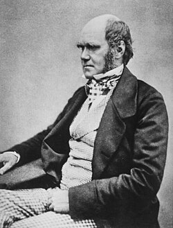

Charles Robert Darwin
Charles Robert Darwin (/ˈdɑːrwɪn/[5] DAR-win; 12 February 1809 – 19 April 1882) was an English naturalist, geologist, and biologist,[6] widely known for his contributions to evolutionary biology. His proposition that all species of life have descended from a common ancestor is now generally accepted and considered a fundamental scientific concept.[7] In a joint presentation with Alfred Russel Wallace, he introduced his scientific theory that this branching pattern of evolution resulted from a process he called natural selection, in which the struggle for existence has a similar effect to the artificial selection involved in selective breeding.[8] Darwin has been described as one of the most influential figures in human history and was honoured by burial in Westminster Abbey.[9][10] Darwin's early interest in nature led him to neglect his medical education at the University of Edinburgh; instead, he helped Robert Edmond Grant to investigate marine invertebrates. His studies at the University of Cambridge's Christ's College from 1828 to 1831 encouraged his passion for natural science.[11] However, it was his five-year voyage on HMS Beagle from 1831 to 1836 that truly established Darwin as an eminent geologist. The observations and theories he developed during his voyage supported Charles Lyell's concept of gradual geological change. Publication of his journal of the voyage made Darwin famous as a popular author.[12] His first scientific work was The Structure and Distribution of Coral Reefs (1842). Along with his work on barnacles, it won him the Royal Medal in 1853. Puzzled by the geographical distribution of wildlife and fossils he collected on the voyage, Darwin began detailed investigations and, in 1838, devised his theory of natural selection.[13] Although he discussed his ideas with several naturalists, he needed time for extensive research, and his geological work had priority.[14] He was writing up his theory in 1858 when Wallace sent him an essay that described the same idea, prompting the immediate joint submission of both their theories to the Linnean Society of London.[15] Darwin's work established evolutionary descent with modification as the dominant scientific explanation of natural diversification.[16] Darwin published his theory of evolution with compelling evidence in On the Origin of Species (1859).[17][18] He explored coevolution in Fertilisation of Orchids (1862) and human evolution and sexual selection in The Descent of Man, and Selection in Relation to Sex (1871). The Expression of the Emotions in Man and Animals (1872) was an early work of psychology, and one of the first books to feature photographs. His final book was The Formation of Vegetable Mould, through the Actions of Worms (1881). By the 1870s, the scientific community and a majority of the educated public had accepted evolution as a fact. However, many initially favoured competing explanations that gave only a minor role to natural selection. It was not until the emergence of the modern evolutionary synthesis from the 1930s to the 1950s that a broad consensus developed in which natural selection was the basic mechanism of evolution.[16][19] Darwin's discovery is the unifying theory of the life sciences, explaining the unity and diversity of life.
